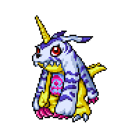
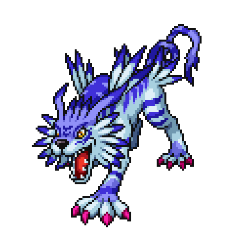
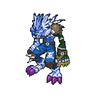
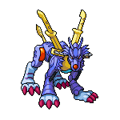

Gabumon
Gabumon is a Reptile Digimon. Although it is covered by a fur pelt, it is still clearly a Reptile Digimon. Due to its extremely timid and shy personality, it always gathers up the data which Garurumon leaves behind, and shapes it into a fur pelt to wear. Because it is wearing the fur pelt of Garurumon, who is feared by other Digimon, it fills the role of safeguarding itself as a result of protecting its body. When it is wearing the fur pelt, its personality does a complete 180° shift.

Garurumon
Garurumon is an Animal Digimon. It is covered in blue, white, and silver-colored fur as hard as "Mithril", which is called a legendary rare metal, and since the blades growing from the tips of its shoulders have sharp edges, anything that touches them is cut to pieces. As it possesses a furious combat instinct and sinews honed in freezing lands, as well as carnivore-like agility and the accuracy to reliably bring down its targets, it is a being feared by other Digimon. However, its intelligence is very high, and it faithfully obeys those who it recognizes as its master or leader.

Weregarurumon
WereGarurumon is an Animal Digimon. It digivolved from Garurumon and became able to walk on two legs. It lost its speed due to becoming bipedal, but became a Commando Type Digimon with stronger offensive and defensive power, as well as developing a tactical nature. Its kicking techniques, which it unleashes using the leg strength it inherited from Garurumon, are quite strong, so its jumping ability contends for first or second place among other Digimon. Also, it is rich with loyalty, and has a reliable nature, faithfully executing its mission if its master gives it an order.

Metalgarurumon
MetalGarurumon is an Android Digimon. It is the final form of Garurumon and the ultimate form of Garurumon-species Digimon, and powered itself up by metallizing almost its entire body. Not only has it retained its natural keenness when it underwent metallization, but it can also pulverize the opponent with the countless weapons concealed throughout its body, whose number is rivaled by those of MegaGargomon, the high-temperature counterpart to the low-temperature MetalGarurumon. It radiates invisible lasers from the four Laser Sights on its snout, and because it is able to analyze the targets before it using all of its sensors, such as infrared rays and X-rays, it is impossible to escape MetalGarurumon even when among the darkness outside of its field of vision. Also, it can release beam-shaped wings from the arms extending from its back, allowing it to fly about the Net Space at extremely high speed.
